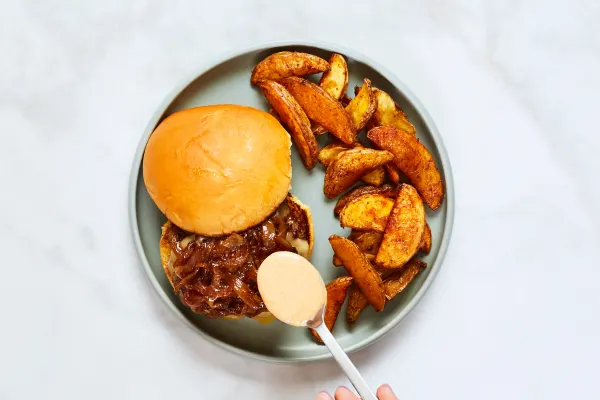

White Cheddar Wonderburgers
with OLD BAY Fries, Caramelized Onion & Special Sauce

Description
What puts the “wonder” in “wonderburger,” you ask? It’s all in the texture! To achieve crispy, craggy edges, we form ground beef into balls, then press down in a hot pan with a spatula to create super-thin patties. In the last few minutes of cooking, we top them with gooey white cheddar, then sandwich each between a potato bun with caramelized onion. A homemade special sauce is perfect for pairing with the Old Bay fries on the side—and will elicit major “oohs” and “ahhs” from your dining companions.
Ingredients
- 1 Yellow Onion
- OLD BAY Seasoning
- 2 tablespoons of Ketchup
- 10 ounces of Ground Beef
- 2 Potato Buns
- 12 ounces of Yukon Gold Potatoes
- 2 tablespoons Mayonnaise
- 2 teaspoons Dijon Mustard
- 1/2 cup of White Cheddar Cheese
- Kosher Salt
- Pepper
- 4 teaspoons Cooking Oil
- 1 teaspoon Sugar
Steps
- • Adjust rack to top position and preheat oven to 425 degrees. Wash and dry produce. • Cut potatoes into ½-inch-thick wedges. Halve, peel, and thinly slice onion.
- • Toss potatoes on a baking sheet with a drizzle of oil and half the OLD BAY® Seasoning (you’ll use more later). Season lightly with salt and pepper. TIP: No need to season generously— there’s already salt and pepper in the seasoning! • Roast on top rack until browned and crispy, 20-25 minutes.
- • While potatoes roast, heat a large drizzle of oil in a medium, preferably nonstick, pan over medium-high heat. Add onion; cook, stirring occasionally, until browned and softened, 8-10 minutes. • Add 1 tsp sugar and a splash of water; cook until onion is caramelized and jammy, 2-3 minutes more. Season with salt and pepper. • Turn off heat; transfer to a small bowl.
- • Meanwhile, in a second small bowl, combine mayonnaise, ketchup, mustard, and as much remaining OLD BAY® Seasoning as you like. Set aside. • Form beef* into two equal-sized balls; season all over with salt and pepper.
- • Heat a drizzle of oil in pan used for onion over medium-high heat. Once pan is hot, add beef. Firmly flatten each ball with a spatula to create very thin patties. (TIP: Do so carefully; oil may splatter a bit.) Cook to desired doneness, 3-4 minutes per side. (Don’t worry if the patties aren’t perfectly round—those irregular edges will turn crispy.) • In the last 1-2 minutes of cooking, top patties with cheddar; cover until cheese melts. Remove from heat.
- • While patties cook, halve and toast buns. • Divide buns between plates and fill with patties, caramelized onion, and half the special sauce. Serve Old Bay fries on the side with remaining special sauce for dipping.